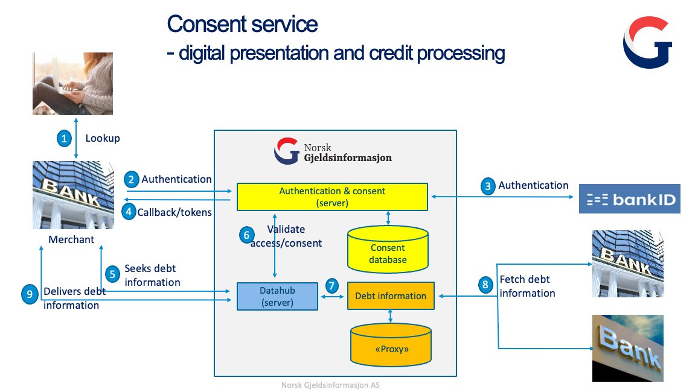

Fetching debt information with consents
This service lets you:
- Ask user for consent to share unsecured debt information
- Fetch information about a consumers unsecured debt based on that consent
It uses a redirect-based flow which adheres to the common OAuth2.0 and OpenID Connect standards.
The debt info is delivered on the same format as our debt query API, but since it is provided with the end users consent, we also include the name of the creditors.
1 - Getting started
1.1 - Introduction

1.2 - Requirements
Before you can start using this service you have to enter into an agreement with Norsk Gjeldsinfomasjon, this is handled by emailing us at support@norskgjeld.no.
When you have signed an agreement, we will send your client id and client secret. You must provide us with the URLs where you want to receive the callback after the consent flow finishes. This is not required if you only intend to manage consents externally (see section 2.6)
This service does not require 2-way TLS, so client certificates (Virksomhetssertifikat, SEID) are not required.
If you plan to run from a provider where you share multiple outbound IP-addresses (eg. cloud providers), you should purchase fixed outbound IP-address(es).
1.3 - Testing
Before you can start testing you will need a client with registered callback URIs and a BankID test user.
This can be created at https://ra-preprod.bankidnorge.no/#/generate. Generate an SSN and set the BankID type to netcentric. When you use this BankID with ID-porten for the first time, you will be asked if you want to add additional info which you can skip.
In preprod (BankID TestBank) the one-time code is always otp, and the password is qwer1234
Note: There will not be any loan information stored on the BankID test person you have created in our test environment, so the debt API will not list any creditors.
Mocked debt data is available on several synthetic personal numbers: 14842249091 and 29868099311
2 - Core concepts
2.1 - OAuth 2.0
OAuth 2.0 is the industry-standard protocol for authorization. Giving an introduction to it is out of scope of this documentation, but there are a lot of good sources out there. We recommend looking at the documentation, and especially the list of community resources.
2.2 - Access token
Access tokens are opaque strings that represents the authorization of a specific application to access specific parts of a user’s data. There is no information encoded in the token itself, but it can be used to collect debt information from the debt API. Access tokens are sensitive. It is important that they are stored securely.
2.3 - Flows
We are using two OAuth2.0 flows, Authorization Code and Client Credentials.
2.3.1 Authorization Code Flow
Authorization Code flow is used to authenticate a user and obtain a consent to share their debt information. It is initiated by redirecting the users browser to our /auth endpoint with the required parameters in the URL.
2.3.2 Client Credentials Flow
The Client Credentials flow is used to obtain an access token to identify the client when collecting debt information with a consent which was granted for an extended duration.
The access token received on this request is used in addition to the id of the consent when querying the debt API.
2.4 - Scopes
Scopes are space-separated lists of identifiers used to specify what access privileges are being requested.
Due to legal reasons a consent is required to have a specific purpose; you can therefore only ask the user to consent to one scope at a time.
The scopes also contain the purpose of the consent, which can either be presentation of debt information (gjeldsinformasjonen) - or credit processing.
This is done by supplying the corresponding scope when you initiate the flow, and the request to /auth must therefore contain one and only one of the following scopes:
Scope | Intended use | Default duration | Max duration |
debt.unsecured.presentation | Solely for displaying the debt info | 10 min | 365 days |
debt.unsecured.processing | Credit processing, for example refinancing of existing debt | 10 min | 28 days |
A default consent allows you to collect the debt info one time within 10 minutes.
See section 2.5 for consents with an extended duration
OPTIONAL:
It is also possible to ask for the openid scope. This is used to contain the ssn and consentID of the flow.
If you request the openid scope, it must be the last scope given in the request.
Correct: “debt.unsecured.presentation openid”.
Incorrect: “openid debt.unsecured.presentation”
Scope | Intended use | Description |
openid | Receive consentID and ssn securely for verifying correct person has consented to share debt information. Can be used to go directly to the Client Credentials Flow from the Authorization Code Flow by extracting the consentID from the ID Token. | ID Token as a JWT-token with: Note: The “sub” field should not be stored |
2.5 - Consents with an extended duration
It is possible to ask the user for a consent with an extended duration. This is done by appending the requested duration of the consent in days after the scope.
Starting the flow with the scope “debt.unsecured.presentation.365” would prompt the user to consent to sharing their debt information for 365 days, which is the maximum duration for this type of consent. Note that this is a way to specify duration. The scope name displayed in redirect URLs will still be “debt.unsecured.presentation”.
The two scopes have different max numbers of days that you can request, and if provided a number higher than this we will default to the boundary value.
It is possible to choose a shorter duration than the maximum duration if that is more suitable for you, for example debt.unsecured.presentation.50 would prompt the user to consent to sharing their debt information for 50 days.
The debt info can be collected any number of times using consents with an extended duration, but keep in mind that users can log into www.norskgjeld.no and see every single time their consent has been used to collect debt info.
2.6 - Consents created and managed outside NoGi (e.g. in an online bank)
Consents can also be captured and managed in your own system, and only "registered" in NoGi. In order to be able to use this feature, you must conform to the rules and regulations for this functionality, and sign an agreement up-front.
After you have gathered the consent from the enduser, you will register the consent (and its scope)
at NoGi. Before you can register the new consent, you must first fetch new access token using
3.4.3 - Client Credentials Flow with scope set to consent.create.
The access token is then used to call the PUT - /v1/consent/agreement endpoint
to register the consent from the enduser at NOGI. The scope_of_consent, described in API documentation for
PUT - /v1/consent/agreement endpoint, is the same type of Scope described in
2.4 - Scopes. This will return the NOGI generated consentId (consent.id in response).
You can then fetch debt by getting an access token using client credentials flow (see 3.4.3 - Client Credentials Flow), and then fetch debt as described in 4 - Collect Debt Info API
Example implementation
There is an example implementation in python of how to create and fetch debt using contract based consents here: create-agreementbased.py. Remember to replace the values of the variables in the script:
client_id = '<your-client-id>'
client_secret = '<your-client-secret>'
3 - Integration
The Consent API is compliant with the OAuth2.0 standard. We therefore strongly recommend that you use a client library to perform this part of the integration.
A good place to start is to search the list of clients certified by the OpenID foundation for a client written in your programming language.
3.1 - Base Urls
Environment | Base URL |
Preprod | https://access-preprod.norskgjeld.no |
Prod | https://access.norskgjeld.no |
3.2 - /.well-known/openid-configuration
The OpenID-configuration returns metadata which can be used to configure your client library.
Example request
GET:https://access-preprod.norskgjeld.no/.well-known/openid-configuration
Example response
{
"issuer":"https://access-preprod.norskgjeld.no/",
"authorization_endpoint":"https://access-preprod.norskgjeld.no/oauth2/auth",
"token_endpoint":"https://access-preprod.norskgjeld.no/oauth2/token",
"jwks_uri":"https://access-preprod.norskgjeld.no/.well-known/jwks.json",
"subject_types_supported":[
"pairwise"
],
"response_types_supported":[
"code"
],
"claims_supported":[
"sub"
],
"grant_types_supported":[
"authorization_code",
"client_credentials"
],
"response_modes_supported":[
"query",
"fragment"
],
"userinfo_endpoint":"https://access-preprod.norskgjeld.no/userinfo",
"scopes_supported":[
"openid"
],
"token_endpoint_auth_methods_supported":[
"client_secret_basic"
],
"userinfo_signing_alg_values_supported":[
"none",
"RS256"
],
"id_token_signing_alg_values_supported":[
"RS256"
],
"request_parameter_supported":true,
"request_uri_parameter_supported":true,
"require_request_uri_registration":true,
"claims_parameter_supported":false,
"revocation_endpoint":"https://access-preprod.norskgjeld.no/oauth2/revoke",
"end_session_endpoint":"https://access-preprod.norskgjeld.no/oauth2/sessions/logout",
"request_object_signing_alg_values_supported":[
"RS256",
"none"
]
}
3.3 - /oauth2/auth
The auth endpoint is the starting point for the OAuth2.0 Authorization code flow. This request authenticates the user and returns a code on the callback which can be exchanged for an access token towards the /token endpoint.
It is important that you show the user some kind of confirmation that the consent has been received on the callback. This could for example be a landing page if you intend to redirect the user to another service.
Parameter | Description | Required |
client_id | client id received from Norsk Gjeldsinformasjon | yes |
response_type | Must be set to "code" | yes |
scope | Must contain one and only one debt-related scope. It may optionally contain the “openid” scope | yes |
redirect_uri | Whitelisted URI where the user will be redirected after consenting | yes |
state | This is mirrored back in the callback request. Should be set to a random value for each request | yes |
Example request:
GET:https://access-preprod.norskgjeld.no/oauth2/auth?client_id=your_client_id_here&response_type=code&scope=debt.unsecured.presentation&state=thisShouldBeARandomValue&redirect_uri=https://api-eksempelbank.no/v1/callback
Example response:
Success response:
https://api-eksempelbank.no/v1/callback?code=wi-w8zIdwwBHggkHhSjR24wH8pN6MDqxdObTBDuzaZo.sciTzz9qgwMlGBZ6X0jYIDyib8MupoIp5gbIJBxnTCs&scope=debt.unsecured.presentation&state=thisShouldBeARandomValue
Error response:
https://api-eksempelbank.no/v1/callback?error=consent_denied&error_description=&state=thisShouldBeARandomValue
The error code can be "consent_denied", "server_error", "invalid_scopes" or "login_cancelled"
3.4 - /token
The token endpoint is used to obtain an access token which is used when collecting debt information from the debt-API. This can either be completed with the code received on the callback after the user has finished delivering their consent (Authorization Code Flow) , or the client can identify directly with their credentials to obtain an access token directly (Client Credentials Flow).
3.4.1 - Authentication
When calling the token endpoint you have to identify yourself. This is done by supplying your client id and client secret in the Authorization header using the Basic authentication scheme.
3.4.2 - Authorization Code Flow
When requesting an access token using authorization code flow the following parameters have to be present in the body which should be of type application/x-www-form-urlencoded
Parameter | Description |
grant_type | Must be set to “authorization_code” |
client_id | Client id received from Norsk Gjeldsinformasjon |
redirect_uri | Whitelisted URI where the user will be redirected after consenting |
code | Authorization received on the authorization callback |
Example request
POST:https://access-preprod.norskgjeld.no/oauth2/token
HEADERS and BODY as described above.
Example response
{
"access_token":"YcvXKoiuOwnbJkxso2Oe6bhp2cXcoHdZ1pdgE_QpDww.cAu8_J51evXtBQxfTMzkRA414_mOla1zryE1e_-r-1k",
"expires_in":3599,
"scope":"debt.unsecured.presentation",
"token_type":"bearer"
}
3.4.3 - Client Credentials Flow
When requesting an access token using the client credential flow the following parameters have to be present in the body which should be of type application/x-www-form-urlencoded
Parameter | Description |
grant_type | Must be set to “client_credentials” |
audience | Must be set to "https://api.norskgjeld.no/v1/debt” in prod and “https://api-preprod.norskgjeld.no/v1/debt” in preprod |
scope | Must contain a space separated string with the scopes that you are going to fetch debt information for. It should usually be set to: debt.unsecured.presentation debt.unsecured.processing |
Example request
POST:https://access-preprod.norskgjeld.no/oauth2/token
HEADERS and BODY as described above.
Example response
{
"access_token":"C2EzneyuE2lEK8VBYZS7TxBUMF16Ns6gTuU5DybZbY.6pcF_rv3muje47_GDucYJrQZvDioc8O7oCmvKMZKHEg",
"expires_in":3599,
"scope":"debt.unsecured.presentation debt.unsecured.processing",
"token_type":"bearer"
}
4 - Collect Debt Info API
After you have received an access token from the Authorization server you can use it to collect the debt information from the API which is documented here.
5 - Read updates about consents
Updates to consents are available as a feed for customers of the consent service.
This service can be used to "subscribe" to changes instead of checking the status of each individual consent you have registered.
This log will show the last 7 days of events for alle consents given to you.
You will need to use an access token with scope="client.access.consent.events" and audience set to "https://api-preprod.norskgjeld.no/feed/v1/consent" (for preprod) or "https://api.norskgjeld.no/feed/v1/consent" (for production) when calling this API.
NOTE: The sequence numbers you receive will not necessarily correlate to the time a change happened. You must check the timestamps inside the events if you need to order them by when they happened. Sequence number 3 might contain an event that occurred after sequence number 4.
NOTE: The sequence numbers are not guaranteed to be contiguous. You might receive a response containing {seq. nr: 7, seq. nr: 8, seq. nr: 13}.\ The sequence numbers 9-12 are not missing.
The API is defined here.
5.1 Example implementation
An example implementation of fetching updates to consents in python can be found here